UX Strategy · Wireframe · Figma · Auto Layout · Component System · Prototype
UI/UX DESIGN · AI · INTERACTION
아이디어를 설계하고,
디자인하고, 직접 구현합니다.
사용자 경험을 설계하고,
AI와 코드로 실제 서비스까지 완성합니다.
- 기획
- UI/UX
- Interaction
- Development
- Deploy
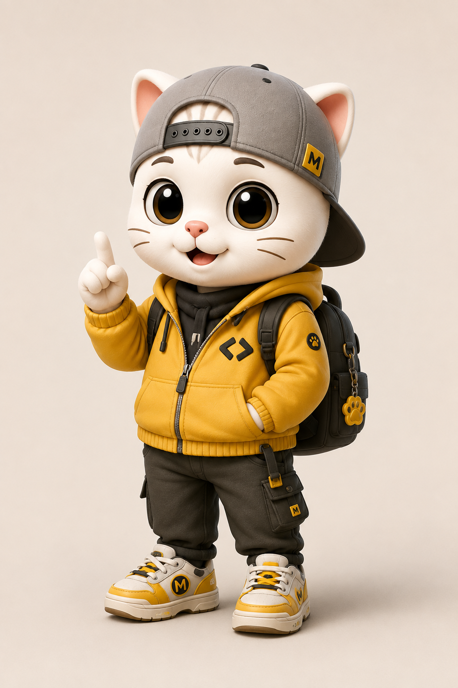
UI/UX DesignAI × Vibe CodingInteractive Web기획 · 디자인 · 개발 사이의
틈을 메웁니다.
사용자가 마주할 경험을 먼저 설계하고 화면의 언어와 움직임을 디자인합니다. 아이디어가 프로토타입에 머물지 않도록 인터랙션, 프론트엔드 구현, 배포까지 연결합니다.
HTML · CSS · JavaScript · GSAP · ScrollTrigger · Canvas · Accessibility
AI-assisted Workflow · Vibe Coding · Prompt Design · GitHub · Vercel
결과물로 먼저 말하는
Selected Projects
MOYORA · MOBILE UI
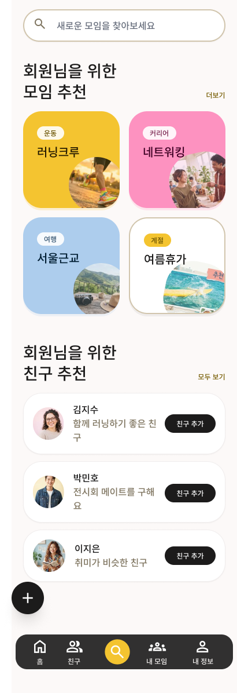
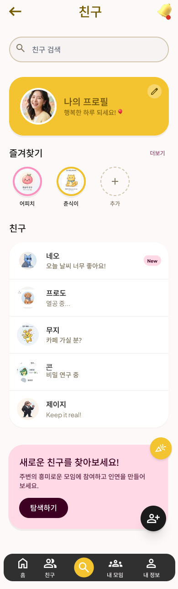
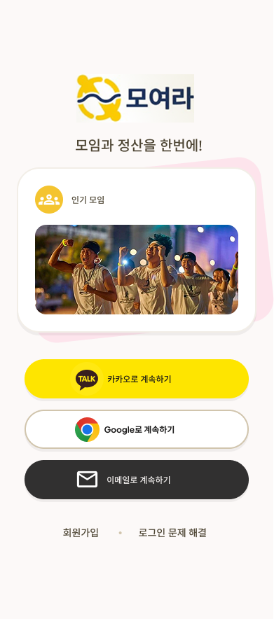
COMMUNITY · MOBILE WEB
모여라 Moyora
처음 만나는 사람도 편하게 참여할 수 있는 커뮤니티 경험
- Problem
- 낯선 모임의 진입 장벽
- Solution
- 친근한 시스템과 모바일 우선 UI
- Result
- 배포 가능한 반응형 경험
VIEWLIGHT · AI LIGHTING
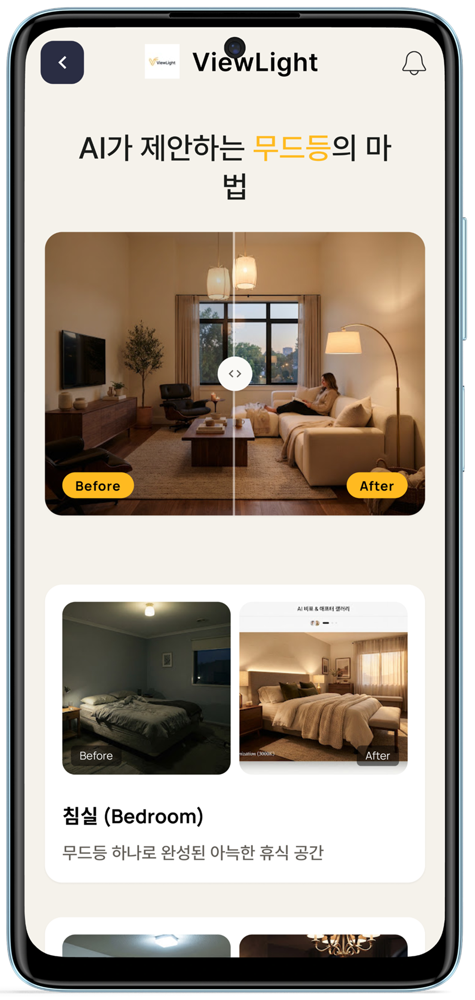
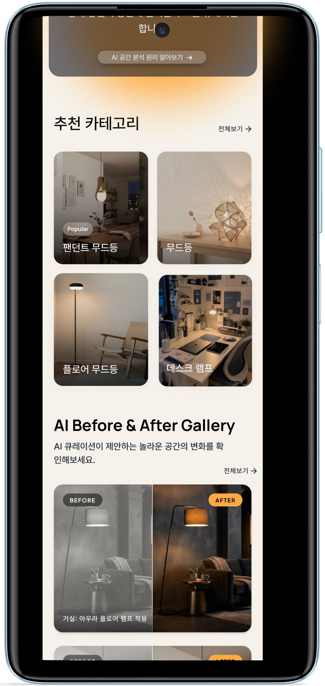
PREMIUM · LIGHTING · AI
ViewLight
조명의 변화를 눈으로 이해하는 프리미엄 인터랙션
- Problem
- 감각적인 차이를 비교하기 어려움
- Solution
- Before / After 조도 비교
- Result
- 직관적인 웹 체험 구축
KARI · INTERACTIVE REDESIGN FULL PAGE EXPERIENCE ↓
FULL PAGE EXPERIENCE ↓
FULL PAGE EXPERIENCE ↓SPACE · INTERACTION · A11Y
KARI
복잡한 우주과학 정보를 누구나 탐색하는 경험
- Problem
- 전문 정보의 높은 이해 장벽
- Solution
- Canvas와 TTS·aria-live
- Result
- 몰입형 학습 경험
Design Systems & Process
Pretendard / Display / Body
캐릭터와 콘텐츠를
하나의 시스템으로.
MIO AI CHARACTER & CONTENT PROJECT질문하는 순간,
질문하는 순간,
새로운 세상이 열려!
오리지널 AI 캐릭터 MIO를 기획하고, Character Sheet와 Master Pack, AI 영상 제작 파이프라인과 Instagram Reel 콘텐츠까지 하나의 캐릭터 브랜드 시스템으로 구축했습니다.
CHARACTER MASTER PACK일관성을 만드는
일관성을 만드는
캐릭터 디자인 시스템
턴어라운드, 표정, 포즈와 디테일을 기준화해 어떤 장면에서도 MIO의 정체성이 유지되도록 설계했습니다.
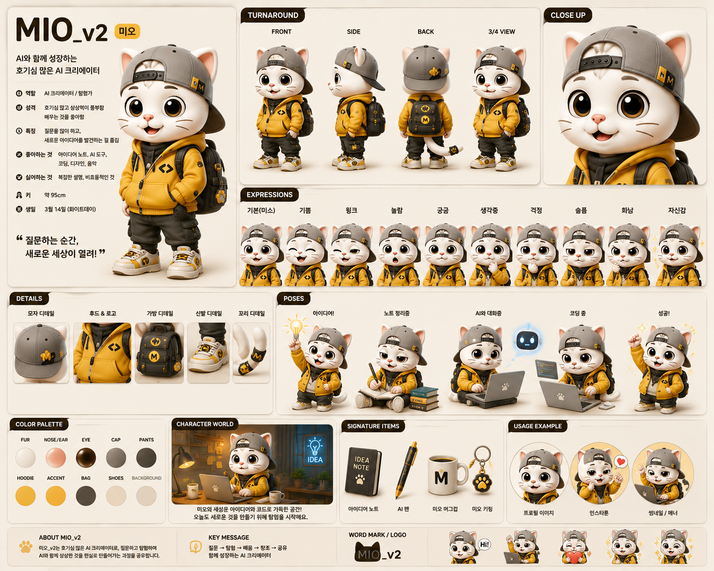
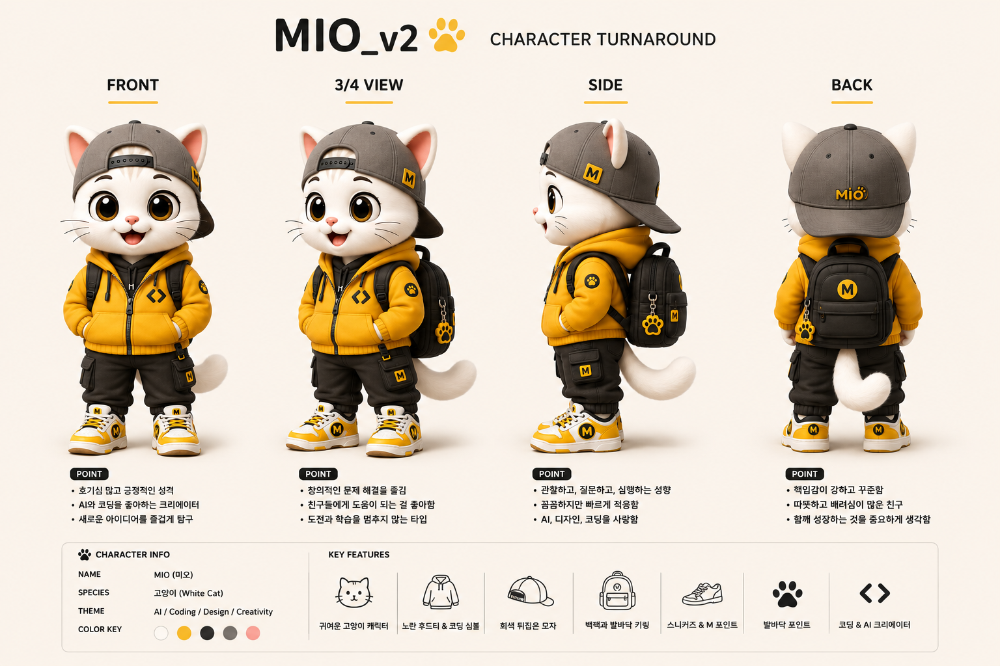
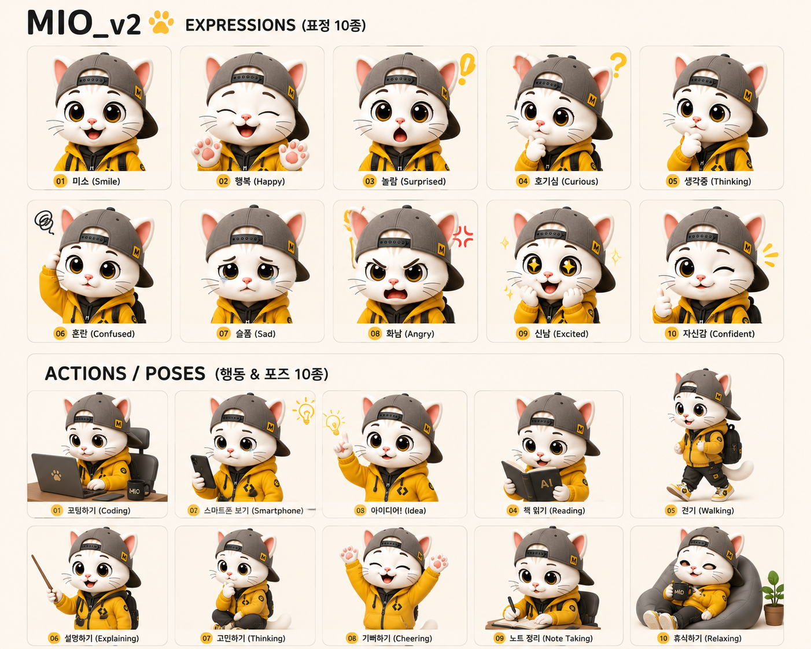
AI CONTENT PIPELINE
- Character Design
- Master Pack
- Prompt System
- Google Flow / Veo
- Reels
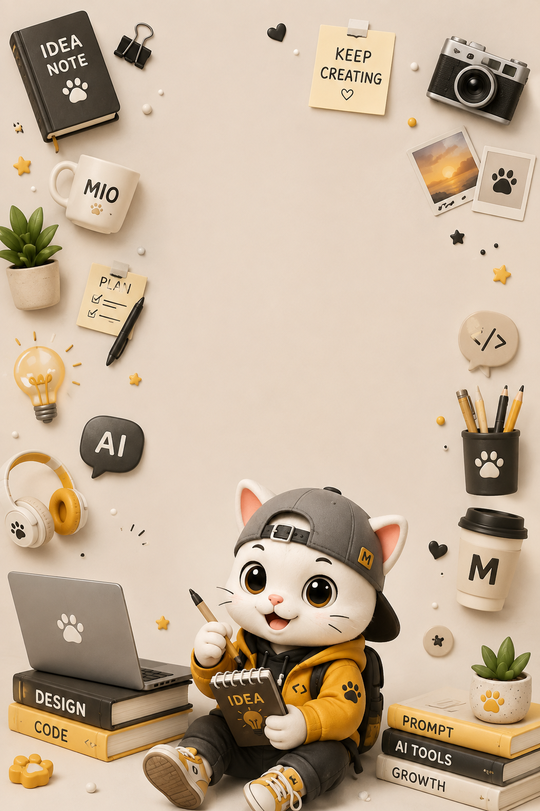
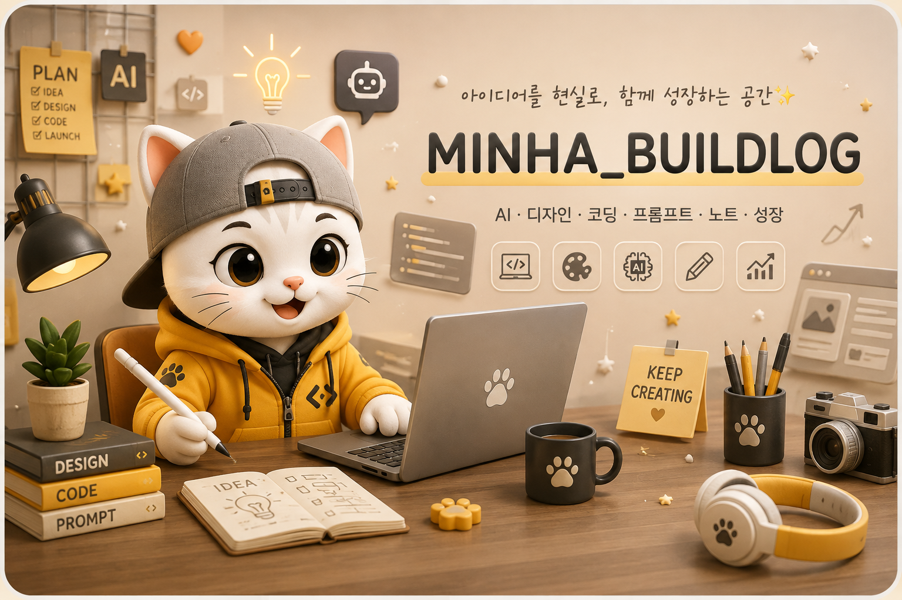
Problems I Solved
Problem 저장소 연결과 배포 권한 충돌
Why 앱 접근 범위 불일치
Solution 권한·환경 변수·저장소 설정 재구성
Impact 재배포 절차 문서화
Problem 초기 재생 지연
Why 고해상도 프레임 동시 로드
Solution 비동기 프리로드와 렌더 순서 최적화
Impact 안정적인 스크롤 경험
Problem 무거운 3D 자산
Why 높은 초기 비용
Solution 이미지 시퀀스와 CSS 모션
Impact 가볍고 안정적인 60fps
좋은 아이디어가 있다면,
같이 화면으로 만들어봐요.
UI/UX · Web · AI Creative
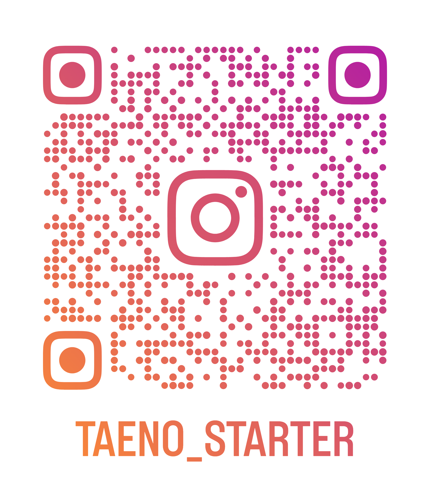
Instagram · TAENO_STARTER
카메라로 QR 코드를 스캔해 AI Creative 콘텐츠를 확인하세요.